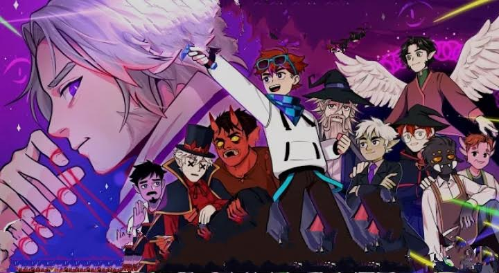

Этот сайт посвящен сезонам Lololoshka

Глава 1 — Переплетение судеб
1-10 серии
Лололошка переместился в новый мир. Постепенно он стал обустраивать свою базу. Временами он подвергался различным издёвкам и бедствиям со стороны неизвестного Люциуса.Однажды он встретил стаю волков, напавшую на попугая. Герой расправился с ними и выяснил, что попугай разумен и умеет говорить, его звали Картер. Он поблагодарил Лололошку и посоветовал никогда не ходить на север, но Лололошка не послушал его и нашёл странный заброшенный замок.Вскоре Картер вернулся к Лололошке и сообщил, что того хочет видеть некий старец, живущий на подножье горы. Придя к нему, Лололошка узнал, что его зовут Бастиан, он маг со стажем 40 лет и хочет попросить героя последить за Картером и его сыном Роджером, так как у мага появились срочные дела из-за странных аномалий в мире. Лололошка согласился.Однажды к Лололошке наведался сам Люциус и случайно убил Картера молнией. Оказалось, что он полубог, у которого отобрал силы верховный совет Богов за его проделки. Люциус просит героя о помощи в возращении сил, но тот отказывает. В гневе Люциус уходит. Герой рассказал это Бастиану, после чего он задумавшись ушёл по делам.
11-20 серии
Лололошка приходит в тот замок на севере и встречает Люциуса. Полубог говорит, что даёт ему второй шанс и просит прощение за смерть попугая, но несмотря на это, получает отказ. Разозлившись, полубог снова насылает бедствия на героя. Не в силах терпеть, Лололошка соглашается на помощь. По плану полубога нужно уничтожить верховный совет Богов для получения власти над вселенной. Так как герой не знает способа связи с Богами, то он отправляется к Бастиану.Лололошка рассказывает магу про Люциуса, он не верит в это, однако всё равно соглашается на встречу.Через пару дней Люциус и Лололошка приходят к Бастиану. Выяснилось, что он съел Я-ягоду и не может нормально говорить. Лололошка отправляется за антидотом. После приёма лекарства маг уснул, скоро ему должно стать легче.Лололошка снова приходит к Бастиану и Люциусу. Маг не верит в то, что он полубог и выгоняет обоих из дома. Позже Бастиан всё таки соглашается помочь и говорит, что его друг по имени Аргус может знать способ связи с Богами.
Спустя время Бастиан сообщает, что Аргус согласен на встречу. Позже маг спросил о попугаях, однако герой всё еще не хочет говорить ему о произошедшем. После Лололошка застаёт Аргуса вместе с Бастианом. За чашечкой чая Аргус рассказал легенду про амулет полубогини Эолы, где заточена часть её души, он был дан рассе фей, чтобы связаться с его носительницей. Амулет может находится у одного коллекционера. Герой идёт к Люциусу и делится новостями. Полубог обрадовался и сразу согласился пойти на поиски амулета. Они добираются к нужному коллекционеру. Оказалось, что амулет был продан. Они находят человека – покупателя амулета, и выкупают его взамен на зелье ассимиляции. Амулет был сломан на две части, но Лололошка смог его починить. Теперь амулет нужно проверить на подлинность, возможно, им так и не удастся связаться с Эолой.На Лололошку напало странное существо, оказалось, что это знакомый Люциуса – демон Воланд, с которым он сбежал из Тюрьмы времени много лет назад. Полубог заступился за героя, теперь Воланд ушёл в ад.Бастиан стал учить Лололошку магии огня. Люциусу не понравилось это, он сказал, что Лололошка больше не нужен ему. Теперь Лололошка горит при входе в замок полубога.
21-30 серии
Лололошка говорит о произошедшем Бастиану, тот делает ему зелье защиты от огня и говорит, что им нужно продолжать держать Люциуса у себя. Пока он не может сказать почему, но это очень важно.Оказалось, что существует некое древо, поддерживающие баланс между мирами. Специальный Орден охраняет его, а во главе стоит великий маг Джодах, но сейчас стали происходить странные аномалии, древо стало увядать, и для поддержания древа нужна божественная сила полубога. Никто кроме фей не знает, как можно передать силу Люциуса в древо, поэтому Бастиан просит Лололошку завести фею. Джодах может помочь вернуть силы Люциуса, если полубог им поможет.Зелье защиты уже готово, поэтому Лололошка приходит в замок к Люциусу и сообщает новости. Полубог согласен и вместе с Бастианом они проводят исследования его сил. Выясняется, что его магия идеально совпадает с магией древа.Лололошка готовится, чтобы завести фею: не ест три дня, учится магии, строит домик для неё и другое, а после наконец ему удаётся завести фею по имени Селести, с которой он быстро подружился.Воланд стал нападать на Лололошку и громить всё вокруг. Несколько дней спустя он пришёл к Люциусу и увёл его в неизвестном направлении, разрушая всё подряд. Лололошка просит Аргуса помочь с демоном, сначала тот не верит, поскольку раса демонов исчезла очень давно, но увидев доказательства соглашается. Он проговорился, что хочет кого-то спасти, герой думает, что Аргус хочет использовать Воланда для своих целей и что-то скрывает.
31-40 серии
Аргус и Лололошка подготовили всё для поимки демона, а после заточили его в клетку. Оказывается, что кто-то дал ему такие силы, из-за чего у него начались припадки. С помощью специальных кристаллов они забирают часть его сил, после чего демон теряет сознание. Аргус ведёт себя странно и продолжает что-то скрывать.Люциус стал добрее и завёл себе змею по имени Айко, но скрывает это и просит Лололошку отнести её к Бастиану, так как она плохо себя чувствует. Оказалось, что она просто давно не ела.Аргус продолжает скрывать что-то от Лололошки и прячет демона у себя в подвале, говоря, что тот ещё не очнулся.В мире продолжают происходить аномалии. По идее Селести можно занести часть души Люциуса в амулет Эолы и уже потом направить его в древо, но для этого Бастиану нужно обучить Лололошку высшей магии.С помощью Селести и амулета Эолы Бастиан связывается с Джодахом, он говорит, что пытается сделать все, что в его силах для удержания аномалий и древа, а пока нужно придерживаться их плана.Селести нашла отрывок книги в библиотеке фей, где говорилось, что амулет Эолы – выдумка. Чтобы узнать это, маги приготовили зелье правды, которое может рассказать правду о любом предмете или человеке.Активировав зелье на амулете выяснилось, что Аргус тайно использовал его и залил туда силу Воланда, чтобы снять проклятие со своей возлюбленной – Катрины. Он долго пытался сделать хоть что-то, но у него не получалось. Когда Лололошка рассказал про Воланда, у Аргуса появилась надежда, так как кровь демона может излечить от любого проклятия. Он предал Бастиана, скрывав это так долго. Он жертвовал спасением целого мира ради своей любви. Позже Аргус раскаялся в своих поступках, Бастиан и Лололошка прощают его.Оказалось, что амулет и так был пустым, значит Селести имела связь с древом и без его помощи, из этого появилась новая идея – пропустить часть души Люциуса через Селести и направить его в древо.К Лололошке приходит неизвестный, это был некий Междумирец. Он сказал не играть с огнём и помнить главную миссию героя, а также, что он всегда наблюдает за ним.
41-45 серии
Чтобы правильно передать магию Люциуса через Селести в древо, Бастиан начал проводить опыты с феей. Также Люциус решил обучить Лололошку магии огня и стал его "учителем".Аргус показывает друзьям лабораторию с проклятой Катриной и Воландом, находящихся в странных капсулах.Бастиану нужно магическое устройство для передачи магии в древо, для этого он с Лололошкой идёт к Аргусу за книгой по магической инженерии. Аргус находит книгу некого Довина Баана. Оказывается, что он был погибшим отцом Катрины. Странно, что девушка никогда ничего не говорила о нём.Пока Аргус ушёл в библиотеку, Воланд наконец-то очнулся и вышел из капсулы. Он сразу встретил Лололошку, рассказавшего ему часть произошедшей с ним истории. После герой пешком вместе с ним пошёл к Люциусу, так как у Воланда пропали силы. Люциус приютил у себя Воланда. Демон заметил, что Люциус изменился, теперь он стал "более мягкотелым".Лололошка рассказал о Воланде Бастиану, тот предложил построить святилище возле замка Люциуса, которое усилит магию Лололошки и защитит Воланда в случае чего.Люциус очень переживает из-за убийства Картера и хочет рассказать всё Бастиану. В мире продолжают происходить странные аномалии. Лололошка впервые приходит к Джодаху, и вместе с Бастианом выясняет, что теперь даже его силы не хватает на поддержание древа. Нужно срочно что-то делать иначе процесс станет необратим.Лололошка активировал пасхальный меч и переместился в тёмную пещеру, где нашёл диадему. Странный голос сказал, что её зовут Спектра и её заточил в диадему злой маг очень много лет назад. Лололошка помог ей выбраться и в благодарность получил её диадему, позволяющую управлять магией цвета.
Глава 2 - Заключённый
46-50 серии
Люциус и Лололошка рассказали Бастиану про смерть Картера. Он был зол, но простил их. После они забрали Роджера, который прятался в далёкой пещере всё это время.Аргус наконец возвращается домой и готов приступить к снятию проклятия. С помощью заклинания Лололошка пробирается в сознание проклятой Катрины и освобождает её душу. Теперь девушка должна отдохнуть и скоро придёт в себя. Также выяснилось, что она была магом–инженером и скрывала это, так как все обычные маги презирали таких, как она и её отец.После Катрине рассказали всё, что произошло. Теперь она должна помочь собрать магическое устройство, чтобы передать магию Люциуса в древо. Она построила огромную мастерскую и начала разрабатывать механизм.В мире появились огромные комары переростки из другого мира, это происходит из-за увядания древа. Даже Джодах продолжает терять свою мощь.Бастиан продолжает обучать Лололошку магии, чтобы тот вступил в Орден. Позже герой наконец побывал в Ордене и ближе познакомился с Джодахом. Он провёл его по территории и всё показал, а потом они принялись за строительство устройств
51-60 серии
Наконец, когда механизм был достроен, Селести посадили внутрь него и активировали, в древо был направлен луч магической энергии Люциуса. Но произошло что-то странное и Лололошка вместе с Селести оказался в тёмном и враждебном мире без какого-либо снаряжения. Оказалось, что это был погибший мир фей, уничтоженный Богами очень давно.Используя подсказки в домах мёртвых фей, герои нашли усыпальницу Эолы и смогли активировать портал в свой мир. Позже Лололошка даже не смог подойти к умирающему древу, его сдерживал магический барьер.Позже маги отключили барьер и рассказали, что Люциус и Джодах пропали. После активации произошёл взрыв и в древе появился портал в мир фей. Все решили, что Люциус использовал магов для возвращения сил и обманул всех, взяв Джодаха в заложники. Члены ордена решили отыскать магические предметы в комнате Джодаха, чтобы найти и одолеть Люциуса, но Лололошка нашёл старый дневник Джодаха, где раскрылась вся правда: оказалось, что Джодах давно уже пытается стать самим Богом, он подстроил все аномалии, древо не поддерживало мир, а сам он преступник, сбежавший из Тюрьмы времени много лет назад вместе с Люциусом, именно он поглотил расу демонов и именно он убил Эолу, забрав её силу, теперь он хочет использовать Люциуса, чтобы достичь цели. Все члены ордена были обмануты, никто не верит, что им удастся одолеть самого Джодаха, но один только Бастиан не теряет надежд.Лололошка с другими магами был у Древа, как вдруг пришли другие маги Ордена. Они решили, что герои причастны к исчезновению Джодаха и наложили на них заклинание правды и в итоге поняли, что они не виноваты. Герои всё рассказали магам и решили объединиться. Бастиан с учёными стал исследовать странные пятна вокруг Древа, а остальные пошли обыскивать комнату Джодаха под командованием его бывшего заместителя и текущего лидера Ордена ‐ гоблина Эмриса.Лололошка проведал Воланда и рассказал события. Теперь он сам хочет спасти Люциуса и ушёл в неизвестном направлении.Чтобы закрыть портал в древе и остановить проникновение комаров-мутантов, Аргус и Катрина запустили в мире фей бомбу, но что-то пошло не так и они не смогли вернуться. Скорее всего, они погибли, но смогли закрыть портал.Бастиан и Эмрис дали Лололошке запрещённый свиток Джодаха, позволяющий обрести все знания в магии. Теперь герой стал очень сильным магом. Чтобы окончательно избавиться от комаров, Бастиан сделал специальный яд и установил ловушку для них вместе с Люком и Альбертом – членами Ордена. Теперь постепенно они умирают. Однажды Бастиана укусил один из комаров, после чего он чуть не умер, но Лололошка смог его спасти. В скором времени все комары были уничтожены.Чтобы найти Джодаха маги изготавливают специальные очки для поиска его магических следов. Когда они готовы, Лололошка с Бастианом отправились по следам Джодаха, но по дороге ему стало плохо. Селести и Лололошка отнесли его в орден. Его состояние было очень плохое, Беннет принялся за изготовление лекарств и стал следить за его состоянием.
61-70 серии
Обезумевший Воланд в ярости стал огромным и изменил свой вид. Он ворвался в Орден и похитил Селести, заявляя, что они сами украли Люциуса и сбежал в неизвестном направлении.Лололошка рассказал про это Эмрису. Он придумал использовать магические очки, настроенные на магию демона, чтобы найти его следы. По следам Лололошка нашёл его, демон тут же напал на него, а потом вдруг захотел помогать. Селести не хочет доверять демону. Теперь он пришёл в Орден, где маги будут допрашивать его и узнают настоящие намерения.Выяснилось, что Воланд действительно хочет помочь. Чтобы он нормально мог ходить внутри Ордена, его уменьшили в размерах с помощью специального заклинания. Эмрис провёл срочное собрание и сказал воодушевляющую речь. По его плану сначала нужно направить все силы на спасение Бастиана, а уже потом ловить Джодаха.Лололошка пришёл в дом Бастиана проверить животных, но застал там странное существо по имени Пимпаджон. Оказалось, что он присваивает себе пустые дома, из которых делает рынок. Он рассказал про какого-то мессира, жертвоприношения и некого белокрылого ангела. Возможно это был Джодах.Беннет нашёл новый способ помочь Бастиану с помощью уникального вещества - эссенции бушующей жизни. Сделать её могут только феи. Поэтому Лололошка с Селести отправились к её подругам, восстановили хранилище мёда, после чего они смогли изготовить эту эссенцию. После приёма которой Бастиану стало легче.Пимпаджон показал дом того ангела, повсюду были перья, магические предметы и символика Ордена. Возможно, это действительно Джодах.По приходе в Орден Лололошка застал всех кроме Воланда спящими. По записке Эмриса герой нашёл книгу, где выяснилось, что они попали в кошмар девушки-призрака по имени Энария, питающейся жизненной силой людей, попавших в её кошмар.Чтобы освободить всех от кошмара Лололошка отправился в её мир с помощью специальной кровати. В замке он встретил её добрую сестру, которая хотела помочь герою, но оказалось, что это и была Энария, обманувшая Лололошку. Герой одолел девушку и освободил всех ото сна.Пока их не было Воланд устроил полный бардак и говорил про каких-то странных жителей.Бастиан наконец проснулся и заговорил, Лололошка рассказал ему всё, что произошло, а потом он снова уснул. Постепенно он приходит в себя. На территории Ордена Лололошка нашёл записку с угрозами, где речь шла про какого-то мессира. Он рассказал про записку и историю с Пимпаджоном Эмрису. Он пошёл искать ответы в книгах.Лололошка снова пришёл в тот дом и встретил там человека, похожего на Джодаха. Это был его брат по имени Джейс. Он рассказал, что их родной мир Скайзерн был уничтожен полубогом Зеферионом. Джодах хочет отомстить ему. Также Лололошка рассказал всё, что делал Джодах, Джейсу нужно время, чтобы всё обдумать.Герой поведал про Джейса Эмрису. Они сразу отправились к нему и он рассказал историю своего мира. После они пошли в Орден «для знакомств». Эмрис не хочет ему доверять.Чтобы одолеть Джодаха они придумывают новый план: найти какого-нибудь полубога, Джейс поглотит его, и используя его силу сразится с самим Джодахом. На Лололошку продолжают нападать Пимпаджон и его приспешники, говоря про какого-то мессира. Магам нужно выяснить кто это, чтобы прекратить нападения. Позже герои отправились в Край к полубогине Абиссе. Оказывается, она следила за ними всё это время. После они забрали её силу. Как только Джейс начал поглощать её силу, появились Люк и Крайр и перенаправили её в накопители. Эмрис сказал, что не доверяет Джейсу, после чего резко телепортировался со всеми в лабораторию, где рассказал, что делать дальше. Сейчас нужно сделать распознаватель магии, что бы найти Джодаха среди миров.
71-84 серии
Оказалось, что мессиром всё это время был Воланд, фанатики думали, что его похитили и пытались спасти. Они унесли его в своё логово и демон сам остановил и успокоил их.Возле Ордена обнаружили странную аномалию - огромный лавовый кратер, в ходе исследований выяснили, что он имеет божественную структуру магии Люциуса.Члены Ордена стали создавать устройство для поиска Джодаха. Оно работает на основе источников Элдрина - мест с особыми скоплениями магии: Земля, Огонь, Вода, Воздух, а также два особенных, испускающих чистую магию - это эндер и колдовстко источники. Они создали магические конструкция в каждом из источников. С помощью объединённых источников магии в один пучок они смогут телепортироваться в другие мира и найти следы магии Джодаха в других мирах.Воланд разозлился на всех, сказав, что они ничего не делают и ушёл искать Люциуса со своими подопечными сам, но Лололошка смог его успокоить и вернуть.Джейс говорит, что если они найдут Джодаха, то он хочет забрать его силы для восстановления Скайзерна. Почти никто ему не доверяет. Позже Пимпаджон пришёл к Лололошке, сказав, что белокрылый ангел творил ужасные вещи. Но Джейс ответил на это, что ничего не понимает и выгнал героя.Всё наконец готово к поискам Джодаха, Эмрис и Бастиан с Лололошкой отправились в другие миры и собрали различные образцы для исследований. В одном из которых обнаружили следы очень мощной магии.Селести приснился страшный кошмар, где был какой-то пёс, смех и листья.Джейс собрал членов Ордена и рассказал лекцию про мироходцев и междумирцев. Оказалось, что Лололошка и есть мироходец, то есть может свободно перемещаться между мирами. А междумирцы – древние существа, подобные Богам и живущие в пустоте между мирами. О них нет точной информации, только легенды.Эмрис и Бастиан с Лололошкой продолжают собирать следы Джодаха. Теперь они должны открыть кротовую нору, чтобы переместиться в конкретный, а не случайный мир, где он может находиться.Джейс провёл ещё одну лекцию и рассказал про магию разрушения, под неё может быть адаптирован любая стихия. Если все члены Ордена используют магию разрушения на накопителе с магией Абиссы, то её можно усилить настолько, чтобы сразить Джодаха.Селести снова приснился сон. По просьбе Лололошки Цесанна, разбирающаяся в толковании снов, рассказала, что значат сны Селести: мучительная сметь, которая случится по воле судьбы. И узник откроет врата...Джейс рассказал Лололошке, что нужно найти Довина Баана для спасения Катрины и Аргуса. Оказалось, что он жив, но про него никто не помнит. Джейс думает, что кто-то использовал заклинание памяти и стёр воспоминания о нём у всех членов Ордена. Оказалось, что Бастиан и Эмрис ошиблись: следы, найденные в других мирах принадлежали пустотному червю. Однако его можно использовать, глаз червя позволяет увидеть то, что больше всего хочет узнать человек. Чтобы найти его нужно изготовить приманку. Когда приманка для червя была готова Лололошка отправился в энд для его призыва. Лололошка расправился с червём и заполучил его глаз, а после на него напала Абисса и чуть не убила, герой смог спастись. Бастиан и Эмрис стали готовить глаз червя для поисков Джодаха.Джейс, Селести и Лололошка отправились в лабораторию Аргуса в поисках информации про Довина и нашли там два его журнала, где говорилось про его историю попадания в другой мир, изучение способностей мироходца и другое. Оказалось, что он когда-то работал в Ордене, помогал Джодаху и является частью его плана.Селести начала себя странно чувствовать и отвела Лололошку в необычную пещеру, где находился Междумирец, он сказал, что скоро умрёт и надеется, что ему понравится новый проводник, а также дал ему особый меч под названием Светоч пустоты.
Глава 3 – Игра Бога
85-88 серии
Когда всё готово к использованию ока червя, Лололошка использует его и начинает видеть глазами Джодаха. Он был в Тюрьме времени, где вместе со Смотрящим, смотрителем в этой тюрьме, он отправил туда Абиссу и забрал силу одного из Междумирцев, чтобы уметь телепортироваться по мирам. После он отправился в Скайзерн, забрал силу у Зефериона и заключил его в тюрьму, сказав под конец, что даст время подготовиться членам Ордена. Он хочет уничтожить всех полубогов и восстановить порядок вселенной. Эмрис созвал всех и рассказал, что делать дальше, а потом члены Ордена рассказали свои истории и то, как они попали в Орден, а после пошли готовиться.Эмрис рассказал Лололошке свой план: он хочет пропустить через себя божественную магию Абиссы, вживить её в себя, став оружием и ценой собственной жизни одолеть Джодаха. Герою кажется, что он «поехал кукухой».
89 серии(финал)
Все члены Ордена в сборе: Альберто, Бастиан, Воланд, Джейс, Крайр, Люк, Селести, Цесанна и Эмрис с Лололошкой. Теперь они ждут прихода Джодаха в Орден и готовятся к нападению.И вот, когда Джожах уже явился все маги начали атаковать, однако ничего не подействовало, он применил заклинание остолбенения. В ходе разговора с Воландом он вернул ему живого Люциуса, у которого забрал силы.Джодах рассказал, что всё это время наблюдал за Люциусом и за тем, как он менялся, из полубога становился человеком. Он хотел вернуть его силы, так как они ему больше не нужны, но полубог отказал.Также он поведал историю демонов и их гибели: они обладали даром видеть будущее и узнали, что они всего лишь игрушка в руках полубога Ивлиса, брата Люциуса, и их жизни ничего не стоят. Они начали войну с ним и вышли победителями, но тогда их осталось лишь тысяча. Они боялись своей гибели, Агния, что за ними придут. И Джодах поглотил их всех. Он сожалеет о своём поступке.Эмрис приказал снова начать атаку и пропустил через себя всю полу-божественную магию и погиб. Никто не мог поверить, что это случилось по его же собственной вине, нельзя было пропускать так много магии через себя. Джейс сказал, что единственный, кто может дать ответ на все вопросы - это Джодах.Джодах начал свой рассказ: после получения тысячи глаз он хотел только силы. Он познакомился с Люциусом в Тюрьме времени, где тот и рассказал о полубогах. После этого Джодах захотел уничтожить всех полубогов, жестоких и алчных. Вобрав я себя силу Эолы, он понял, что почти не отличается от них, его желание мести и убеждения были такими же, как и у них. Но несмотря на это, он хотел держаться заданного курса и убить Зефериона.Повстречав Довина в Даливарике (мире, где происходили все события), с помощью тысячи глаз он показал ему всё: гибель миров, будущее его дочери, полубогов и всё остальное. Довин очень испугался, осознавая всю свою бесполезность в этом мире по сравнению с богами и попросил лишь одно: не дать умереть его дочери.Оказалось, что дневник Джодаха был ложным после момента поглощения сил Эолы, чтобы тот стал «указанием к действию» главным героям.Джодах поведал роль Довина: ему было поручено собрать команду из доверенных лиц анклава - академии в Скайзерне и придать их заклинанию контроля, чтобы создать новый Скайзерн. Новый мир получил название Синелист. После окончания всех дел Джодах хотел заселить этот мир скайзерновцами, которых удалось спасти Довину с помощью поднебесной колыбели - большой и усиленной банке сжатия пространства, в которую была сохранена часть Скайзерна с его жителями.Джадах также исполнил перед всеми свои «обязательства»: членам Ордена он оставил всю свою библиотеку с накопленными знаниями, Селести дал силу полубога для восстановления мира фей, Бастиану оставил управление Орденом, Джейсу также досталась сила для заселения Синелиста выжившими скайзерновцами.Селести телепортировалась куда-то и вернулась с Аргусом и Катриной, выжившими в мёртвом мире фей.Вдруг появился разрыв материи прямо в комнате и Джодах ценой собственной жизни ради спасения мира закрыл его, поглотив всю пустотную энергию. Он хотел что-то сказать Лололошке, но умер. Последние минуты жизни он провёл с близкими людьми и погиб счастливым.На самом деле Джодах не погиб и специально устроил этот «спектакль», чтобы они не искали его и он остался бы в их памяти.В самом конце показали четырёх главных Богов, игравших в шахматы с фигурками главных героев. Одна из фигурок начала двигаться - это был Джодах, ставший новым игроком. Теперь Джодах стал Богом.После всех событий Лололошка переместился в новый мир.
Пасхальная концовка
Лололошка взял светоч пустоты и вошёл в разрыв пространства, попав в странное пустое пространство, где Джодах поведал ему свою историю: всё началось с проклятия его семьи, он был вынужден убивать и поглощать силы живых существ, чтобы выжить. У мальчиков это проявляется только в 13 лет, после чего всех мальчиков отправляют в Дизмист - жуткий преступный город на окраинах Скайзерна, где учат убивать. Их сторонились в обществе и боялись.Девочки же могли рождаться только у королевы, сами они не могли родить детей женского пола. Способность рожать девочек могла передаться от старой королеве к новой, но не по наследству, а с помощью специального ритуала, убивавшего старую королеву.Когда Джодах был ребёнком он поступил в школу магии, которую дети оканчивают в 13 лет, как раз из-за Ави, чтобы они могли получить образование перед ссылкой в Дизмист. Джодах стал изгоем из-за своих странностей, его считали убийцей и издевались. В один раз он не выдержал издёвок и постоянных унижений, поглотив одного из учеников. За что его отправили в Дизмист, когда ему было всего 10 лет. Сначала он хотел отомстить им всем, но понял, что его способность позволяет не просто поглощать жизни, но и менять судьбы людей, семей, стран и целых миров.